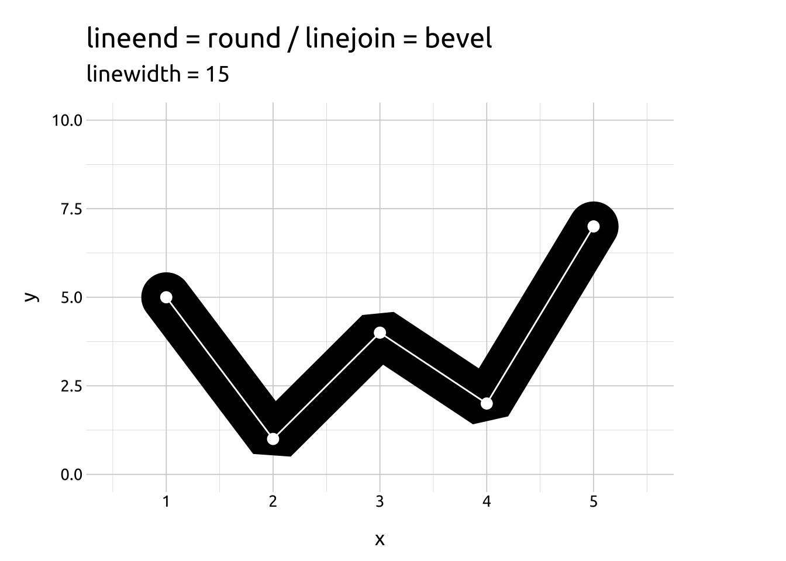
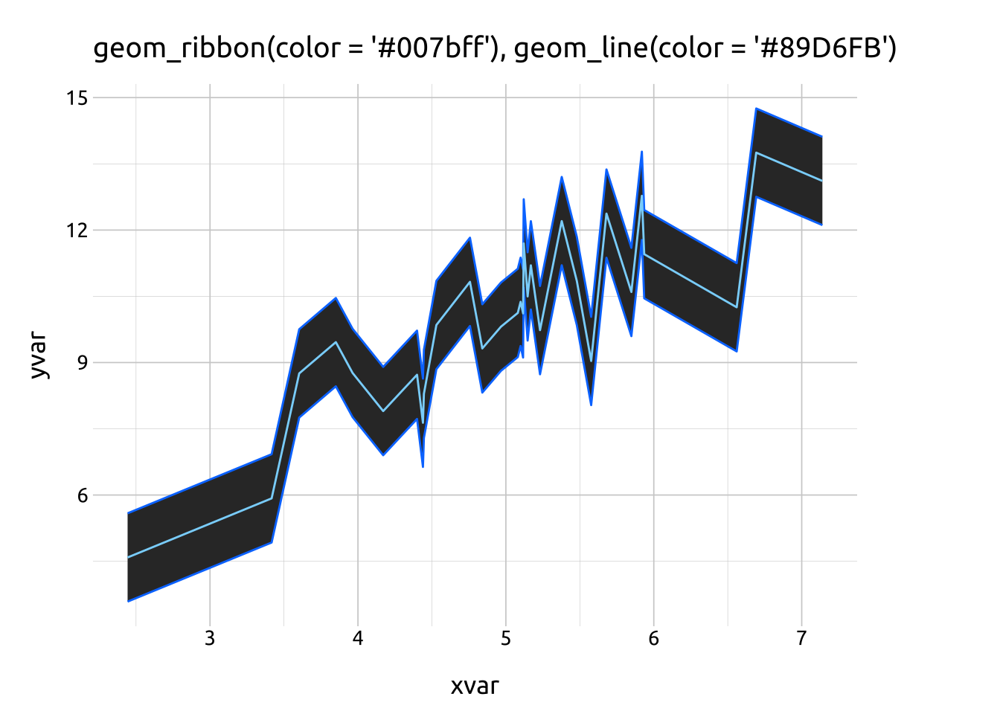

Lines (in development)

PACKAGES:
Install packages.
Code
install.packages("ggplot2")
library(ggplot2)DATA:
Load the ggplot2::economics data.
Code
economics <- ggplot2::economics
dplyr::glimpse(economics)Rows: 574
Columns: 6
$ date <date> 1967-07-01, 1967-08-01, 1967-09-01, 1967-10-01, 1967-11-01, …
$ pce <dbl> 506.7, 509.8, 515.6, 512.2, 517.4, 525.1, 530.9, 533.6, 544.3…
$ pop <dbl> 198712, 198911, 199113, 199311, 199498, 199657, 199808, 19992…
$ psavert <dbl> 12.6, 12.6, 11.9, 12.9, 12.8, 11.8, 11.7, 12.3, 11.7, 12.3, 1…
$ uempmed <dbl> 4.5, 4.7, 4.6, 4.9, 4.7, 4.8, 5.1, 4.5, 4.1, 4.6, 4.4, 4.4, 4…
$ unemploy <dbl> 2944, 2945, 2958, 3143, 3066, 3018, 2878, 3001, 2877, 2709, 2…geom_path()
BASICS:
Code
ggp2_path_base <- ggplot(data = economics,
aes(x = date, y = unemploy))
ggp2_path_base + geom_path()
AESTHETICS:
The required aesthetics are: x and y positions
Code
ggp2_path_base <- ggplot(economics)
ggp2_path_base +
geom_path(aes(x = date,
y = uempmed))
Optional aesthetics include:
colorlinewidthalphalinetypegroup
color
The color aesthetic can be set or mapped, and is useful for differentiating categorical levels.
Code
ggp2_path_base <- ggplot(economics)
ggp2_path_base_long <- ggplot(economics_long)
# mapped color
ggp2_path_base_long +
geom_path(aes(x = date,
y = value01,
color = variable))
# set color
ggp2_path_base +
geom_path(aes(x = date,
y = uempmed),
color = "#007bff")

linewidth
The linewidth determines the size of the line.
Code
# color, linewidth
ggp2_path_base_long +
geom_path(aes(x = date,
y = value01,
color = variable),
linewidth = 0.75)
alpha
The alpha sets the opacity of the line (and is useful for overlapping lines).
Code
# color, alpha, linewidth
ggp2_path_base_long +
geom_path(aes(x = date,
y = value01,
color = variable),
alpha = 1 / 2,
linewidth = 0.75)
linetype
The linetype can be mapped or set with values from ggplot2-specs
Code
# map group, color, linetype, with facets
ggp2_path_base_long +
geom_path(aes(x = date,
y = value01,
color = variable,
group = variable,
linetype = variable)) +
facet_wrap(. ~ variable, ncol = 2) +
theme(legend.position = "none")ARGUMENTS:
We’ve defined two functions for displaying the arguments in geom_path(): path_linetype() displays the different linetype options, and path_lines() displays the options for lineend and linejoin.
linetype
We’ve defined path_linetype(), a function that lets us quickly specify the linetype aesthetic for geom_path():
Code
path_linetype <- function(type = "solid") {
df <- data.frame(x = 1:5, y = c(5, 1, 4, 2, 7))
ggplot2::ggplot(data = df,
mapping = aes(x = x, y = y)) +
xlim(0.5, 5.5) +
ylim(0, 10) +
ggplot2::geom_path(
linewidth = 15,
lineend = "round",
linetype = "solid") +
ggplot2::geom_path(
linewidth = 1.5,
color = "#ffffff",
linetype = type) +
ggplot2::labs(subtitle = type)
}The white line displays the linetype against a black backdrop to enhance visibility. See the lineend argument in the section below:
Code
# manually set linetype
# type = one of: "solid", "dashed", "dotted", "dotdash",
# "longdash", "twodash"
path_linetype(type = "dashed")
path_linetype(type = "dotted")
path_linetype(type = "dotdash")
path_linetype(type = "longdash")
path_linetype(type = "twodash")
path_linetype(type = "solid")


Below the define path_lines(), which builds line graphs with geom_path()’s lineend and linejoin arguments set to "round", "butt", or "square" and "bevel", "round", and "mitre".
The linewidth (lw) and linemitre (lnmtr) can be adjusted to exaggerate their effects.
We’ve added white lines/points to illustrate the data points.
Code
path_lines <- function(lw = 5, lend = 'r', ljoin = 'r', lnmtr = NULL) {
lineends <- c('r' = 'round', 'b' = 'butt', 's' = 'square')
linejoins <- c('r' = 'round', 'm' = 'mitre', 'b' = 'bevel')
ljoin <- linejoins[ljoin]
lend <- lineends[lend]
df <- data.frame(x = 1:5, y = c(5, 1, 4, 2, 7))
ggplot2::ggplot(data = df,
mapping = aes(x = x, y = y)) +
xlim(0.5, 5.5) +
ylim(0, 10) +
ggplot2::geom_path(
linewidth = lw,
lineend = lend,
linejoin = ljoin,
linemitre = lnmtr
) +
geom_path(color = "#ffffff") +
geom_point(size = 3, color = "#ffffff") +
ggplot2::labs(title = paste0(
"lineend = ", lend,
" / ",
"linejoin = ", ljoin),
subtitle = paste0("linewidth = ", lw))
}Lineend: round
A “round” line ending extends the line width slightly and produces curved caps at the start and end of the line (with the intersecting values at the center).
The white line/points are the data points
Code
path_lines(lw = 15, lend = "r", ljoin = "r") # round/round
path_lines(lw = 15, lend = "r", ljoin = "m") # round/mitre
path_lines(lw = 15, lend = "r", ljoin = "b") # round/bevel 

Linejoin: round
A “round” line join produces a curve at the intersection of points on the line.
The white line/points are the data points
Code
path_lines(lw = 15, lend = "r", ljoin = "r") # round/round
path_lines(lw = 15, lend = "b", ljoin = "r") # butt/round
path_lines(lw = 15, lend = "s", ljoin = "r") # square/round

Lineend: butt
A “butt” line end produces an abrupt ending at the start and end of the data points along the line.
The white line/points are the data points
Code
path_lines(lw = 15, lend = "b", ljoin = "r") # butt/round
path_lines(lw = 15, lend = "b", ljoin = "m") # butt/mitre
path_lines(lw = 15, lend = "b", ljoin = "b") # butt/bevel 


Linejoin: mitre
A “mitre” line join extends the area of the line width between intersecting points, giving each connecting point a straight edge.
The white line/points are the data points
Code
path_lines(lw = 15, lend = "b", ljoin = "m") # butt/mitre
path_lines(lw = 15, lend = "s", ljoin = "m") # square/mitre
path_lines(lw = 15, lend = "r", ljoin = "m") # round/mitre 

Lineend: square
A “square” line ending extends the line width slightly and produces a square cap at the start and end of the line (with the intersecting values at the center).
The white line/points are the data points
Code
path_lines(lw = 15, lend = "s", ljoin = "r") # square/round
path_lines(lw = 15, lend = "s", ljoin = "m") # square/mitre
path_lines(lw = 15, lend = "s", ljoin = "b") # square/bevel


Linejoin: bevel
A “bevel” line join ‘shaves’ the line width at the intersection of data points and curves the line with by producing two additional angles (with the intersecting values at the center of the two angles).
The white line/points are the data points
Code
path_lines(lw = 15, lend = "b", ljoin = "b") # butt/bevel
path_lines(lw = 15, lend = "s", ljoin = "b") # square/bevel
path_lines(lw = 15, lend = "r", ljoin = "b") # round/bevel 


geom_ribbon()
BASICS:
Code
ggp2_ribbon_base <- ggplot(data = economics,
mapping = aes(x = date))
ggp2_ribbon_base +
geom_ribbon(mapping =
aes(y = uempmed,
ymin = uempmed + 0.5,
ymax = uempmed - 0.5))
AESTHETICS:
Code
# load correlated data
corr_data <- tibble::tribble(
~xvar, ~yvar,
4.39945542597731, 8.72304029683653,
4.17063449620983, 7.90063554987357,
5.93523342401092, 11.4541978978465,
5.1469950216844, 10.497618946837,
6.5602921658934, 10.2514082668131,
3.60318467023933, 8.75455336713591,
4.44593466081161, 8.29243026086505,
5.91928050392941, 12.7755963254406,
5.37762836695204, 12.2029024379286,
5.67997074416441, 12.3725943179292,
5.08056199671095, 10.1234733135857,
7.13968234777943, 13.1122471221455,
5.47953584350558, 10.8483125442327,
5.1207247271694, 11.6978354394502,
5.16886610539834, 11.2012361563169,
2.44285898166558, 4.5859655824687,
5.23078516502559, 9.73404777362049,
3.96375780089961, 8.76414720443707,
5.84839340452937, 10.5978562919754,
3.41647188446529, 5.92403646423495,
5.09953017417824, 10.3752983817394,
5.57659911788499, 9.03573690321113,
5.11637581346714, 10.1137194319908,
3.85058930107654, 9.46184974952373,
4.43941450511781, 7.63624635401869,
4.75719629862186, 10.8272731721497,
4.5302676699022, 9.85046648295819,
6.6923491882959, 13.7537499935159,
4.8406593897924, 9.31946299458958,
4.96677080464114, 9.81206097632927)The required aesthetics are:
xorypositionsyminorymaxxminorxmax
Code
# map corr_data
ggp2_ribbon_base <- ggplot(data = corr_data)
# map x, y, ymin and ymax, and +/- adjustment
ggp2_ribbon_base +
geom_ribbon(mapping = aes(x = xvar,
y = yvar,
ymin = yvar - 0.667,
ymax = yvar + 0.667))
Optional aesthetics include:
alpha
color
fill
group
linetype
linewidth
alpha
Code
# adjustment
adj <- sd(corr_data$xvar)
ggp2_ribbon_base +
geom_ribbon(mapping = aes(
x = xvar, y = yvar,
ymin = yvar - adj, ymax = yvar + adj),
alpha = 1/3) +
geom_line(mapping = aes(x = xvar, y = yvar),
color = "#ffffff") +
labs(subtitle = "alpha = 1/3")
ggp2_ribbon_base +
geom_ribbon(mapping = aes(
x = xvar, y = yvar,
ymin = yvar - adj, ymax = yvar + adj),
alpha = 1/2) +
geom_line(mapping = aes(x = xvar, y = yvar),
color = "#ffffff") +
labs(subtitle = "alpha = 1/2")
ggp2_ribbon_base +
geom_ribbon(mapping = aes(
x = xvar, y = yvar,
ymin = yvar - adj, ymax = yvar + adj),
alpha = 3/4) +
geom_line(mapping = aes(x = xvar, y = yvar),
color = "#ffffff") +
labs(subtitle = "alpha = 3/4")
color
Code
# adjustment
adj <- sd(corr_data$xvar)
ggp2_ribbon_base +
geom_ribbon(mapping = aes(
x = xvar, y = yvar,
ymin = yvar - adj, ymax = yvar + adj),
color = "#fa7b3c") +
geom_line(mapping = aes(x = xvar, y = yvar),
color = "#ffffff") +
labs(subtitle = "geom_ribbon(color = '#fa7b3c'), geom_line(color = '#ffffff')")
ggp2_ribbon_base +
geom_ribbon(mapping = aes(
x = xvar, y = yvar,
ymin = yvar - adj, ymax = yvar + adj),
color = "#007bff") +
geom_line(mapping = aes(x = xvar, y = yvar),
color = "#89D6FB") +
labs(subtitle = "geom_ribbon(color = '#007bff'), geom_line(color = '#89D6FB')")

fill
Code
ggp2_ribbon_base +
geom_ribbon(mapping = aes(x = xvar,
y = yvar,
ymin = min(yvar) - 1,
ymax = yvar - 0.75),
fill = "#0bd3d3") +
geom_line(mapping = aes(x = xvar, y = yvar),
color = "#9d40f5", linewidth = 1) +
labs(subtitle = "ymin = min(yvar) - 1 , ymax = yvar - 0.75")
ggp2_ribbon_base +
geom_ribbon(mapping = aes(x = xvar,
y = yvar,
ymin = yvar + 0.75,
ymax = max(yvar) + 1),
fill = "#f890e7") +
geom_line(mapping = aes(x = xvar, y = yvar),
color = "#9d40f5", linewidth = 1) +
labs(subtitle = "ymin = yvar + 0.75 , ymax = max(yvar) + 1")
ggp2_ribbon_base +
geom_ribbon(mapping = aes(x = xvar,
y = yvar,
ymin = min(yvar) - 1,
ymax = yvar - 0.75),
fill = "#0bd3d3") +
geom_ribbon(mapping = aes(x = xvar,
y = yvar,
ymin = yvar + 0.75,
ymax = max(yvar) + 1),
fill = "#f890e7") +
geom_line(mapping = aes(x = xvar, y = yvar),
color = "#9d40f5", linewidth = 1) +
labs(subtitle = "ymin = min(yvar) - 1 , ymax = yvar - 0.75\nymin = yvar + 0.75 / ymax = max(yvar) + 1")


ARGUMENTS:
Code
# adjustment
adj <- sd(corr_data$xvar)
# line only
ggp2_ribbon_base +
geom_line(mapping = aes(x = xvar, y = yvar),
color = "#9d40f5") +
labs(subtitle = "geom_line()")
ggp2_ribbon_base +
geom_ribbon(mapping = aes(
x = xvar, y = yvar,
xmin = xvar - adj, xmax = xvar + adj),
fill = "#89D6FB") +
geom_line(mapping = aes(x = xvar, y = yvar),
color = "#9d40f5", orientation = "y") +
labs(subtitle = "xmin, xmin & orientation = 'y'")